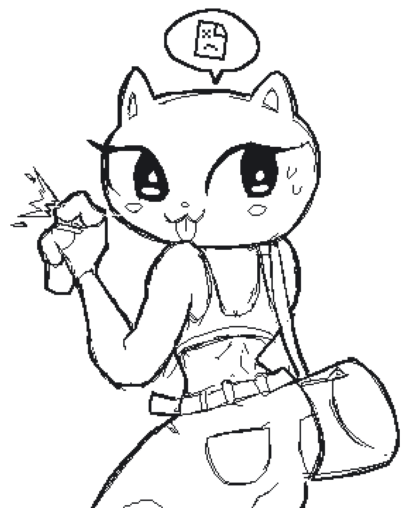

404 NOT FOUND
this page does not exist or has not been made yet.
i'll make this page look cooler later, so fuck up on purpose next time you visit.
there could be something cool!
OCT 19 2024: day one of learning html + css. website started development
OCT 27 2024: homepage, contact, and 404 page at a publishable state, website on the internet
website, music, and art by edvintually
page heavily influenced by
msx.horse and
nasso.dev
(that means i took some code from them)
